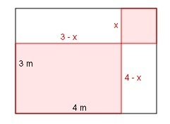

Aufgabe 99
Das Rechteck ist in ein Quadrat (rechts oben) und
3 Rechtecke aufgeteilt.

Die rote Gesamtfläche beträgt 7 m2.
Wie groß ist eine Quadratseite?
Die Quadratseite sei x
Die eine Rechteckseite ist 3 - x
Die andere 4 - x
Rechteckfläche (3 - x)(4 - x)
Quadratfläche x2
(3 - x)(4 - x) + x2 = 7
12 - 3x - 4x + x2 + x2 = 7
2x2 - 7x + 12 = 7 |-7
2x2 - 7x + 5 = 0
A, B, C - Formel
A = 2 ; B = -7 ; C = 5
 7 ± 3
x1,2 = -------
4
7 + 3 10
x1 = ------- = ----- = 2,5 m
4 4
7 - 3 4
x2 = ------- = --- = 1 m
4 4
Die Quadratseite muss größer als 0 m (negativ als
Länge geht nicht) und kleiner als 3 m sein
(sonst entstehen keine 4 Flächen).
1 m und 2,5 m liegen in diesem Bereich.
Probe für x = 2,5
(3 - 2,5)(4 - 2,5) + 2,52 = 7
0,5 * 1,5 + 6,25 = 7
0,75 + 6,25 = 7
7 = 7 wahre Aussage,
die Quadratseite kann 2,5 m lang sein.
Probe für x = 1
(3 - 1)(4 - 1) + 12 = 7
2 * 3 + 1 = 7
6 + 1 = 7
7 = 7 wahre Aussage,
die Quadratseite kann 1 m lang sein.
7 ± 3
x1,2 = -------
4
7 + 3 10
x1 = ------- = ----- = 2,5 m
4 4
7 - 3 4
x2 = ------- = --- = 1 m
4 4
Die Quadratseite muss größer als 0 m (negativ als
Länge geht nicht) und kleiner als 3 m sein
(sonst entstehen keine 4 Flächen).
1 m und 2,5 m liegen in diesem Bereich.
Probe für x = 2,5
(3 - 2,5)(4 - 2,5) + 2,52 = 7
0,5 * 1,5 + 6,25 = 7
0,75 + 6,25 = 7
7 = 7 wahre Aussage,
die Quadratseite kann 2,5 m lang sein.
Probe für x = 1
(3 - 1)(4 - 1) + 12 = 7
2 * 3 + 1 = 7
6 + 1 = 7
7 = 7 wahre Aussage,
die Quadratseite kann 1 m lang sein.